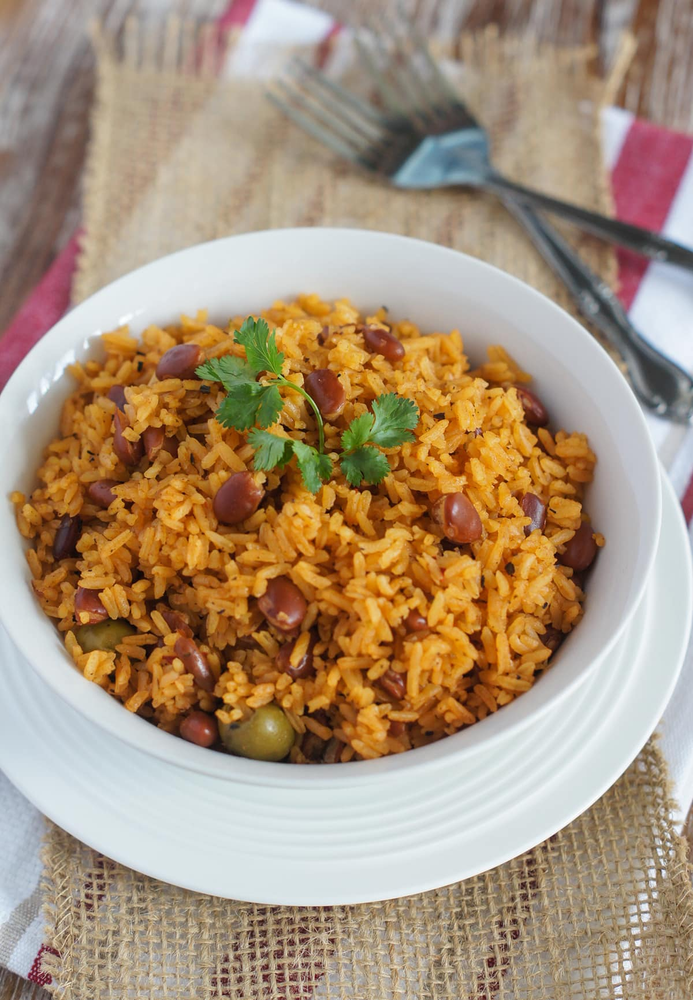

Moro de Habichuelas

Description
Rice and beans is made throughout latin america in a variety of ways. This
variation is popular in the Dominican Republic.
Ingredients
- Red onion
- Bell pepper
- Garlic
- Cilantro
- Tomato sauce
- Chicken Bouillon
- Sazon
- Oregano
- Adobo
- Black pepper
- Red beans
- Rice
Steps
- Heat oil over medium heat in cast-iron pot
- Saute onion, pepper, garlic, cilantro, tomato sauce, chicken bouillon, sazon, oregano, adobo, and black pepper for about 2-3 minutes
- Once the mixture begins to release an aroma, add the beans with its liquid and water
- When the water begins to boil, add the rice and stir occasionally
- Once the rice has soaked up the water and begins to dry, lower the heat
- Cover and let cook for 25 minutes
- Stir rice and cover for 5 more minutes
- Serve warm
Buen Provecho! (Enjoy your meal!)